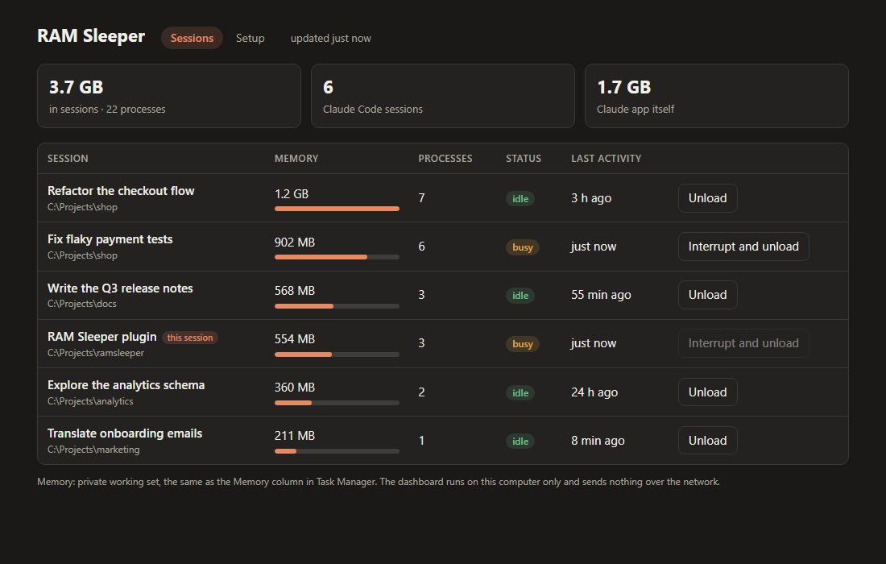
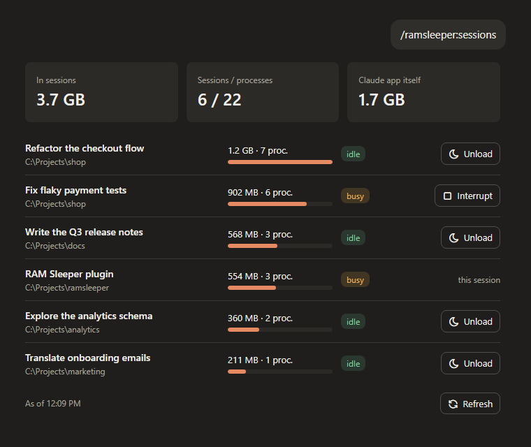
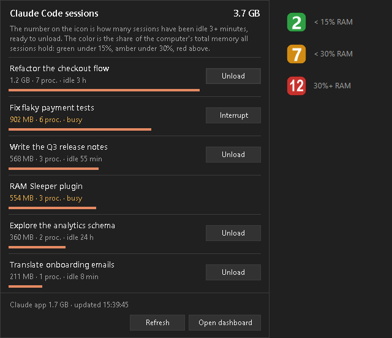
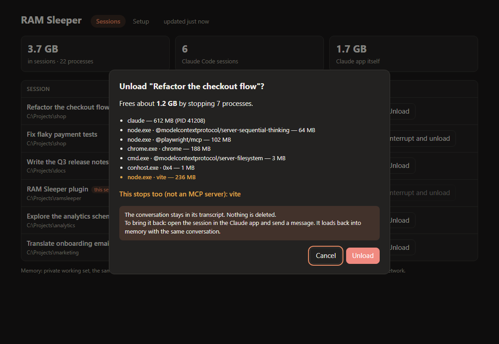
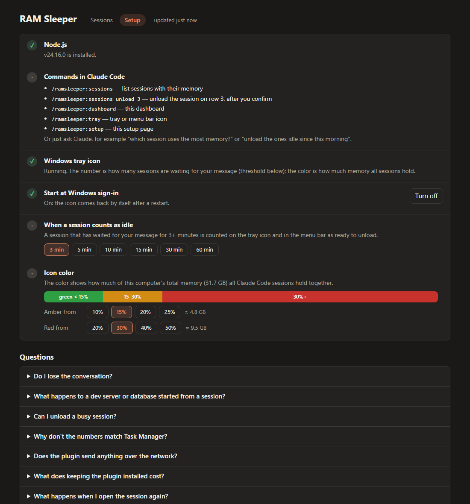

Claude Code using too much RAM? See which session, and put it to sleep.
RAM Sleeper is a free Claude Code plugin. It shows how much memory each session holds, MCP servers included, and unloads the idle ones without losing the conversation. Open a session again and it picks up where you left off.

Why Claude Code memory usage grows
A Claude Code session is not one process. It is the claude process plus every MCP server, shell, browser, and dev server it started. Idle sessions keep all of that in memory, so a few open sessions quietly take gigabytes. Task Manager shows dozens of claude.exe and node.exe rows, but not which session they belong to.
Measured on Windows 11 with the Claude desktop app, September 2026. Your numbers depend on your MCP servers.
What RAM Sleeper does
Memory per session
Each session's figure covers its whole process tree, with its title, status, and last activity. The desktop app's own share is listed separately.
Unload without losing anything
The session is asked to exit on its own, so the desktop app does not report a crash. The transcript stays on disk and the session resumes on your next message.
Always confirms first
You see every process that will stop before anything stops. A dev server or database started from the session is called out separately.
Stuck sessions too
A busy session can be interrupted and unloaded after a separate warning. Everything before the running turn is kept.
Four ways to use it

/ramsleeper:sessions, or ask "which session uses the most memory?"

/ramsleeper:dashboard opens a live view with a confirmation before each unload.
/ramsleeper:setup checks requirements and sets the idle threshold and icon colors. On macOS and Linux there is a menu bar item.Install
You need Claude Code and Node.js 18 or newer on PATH. There are no npm dependencies.
- Run these in a terminal:
Or add RAM Sleeper from the plugin directory in the Claude app.claude plugin marketplace add kejid/ramsleeper claude plugin install ramsleeper@ramsleeper - Restart any Claude Code session that is already open. Plugins load when a session starts.
- Run
/ramsleeper:setup, then/ramsleeper:sessionsto see where your memory goes.
How it works
Every running Claude Code process writes a small file with its session ID, working folder, status, and start time. RAM Sleeper reads these files, then walks the operating system's process table to find each session's descendants and their memory.
To unload, it first asks the session to exit on its own, the way Ctrl+C in a terminal does, so Claude Code shuts down cleanly. Whatever from the confirmed list is still running after five seconds is stopped by force, and only if it is still the same process, checked by its start time. The session you are talking to and the Claude desktop app itself are never touched.
| Windows 10/11 | macOS | Linux | |
|---|---|---|---|
| Session list and memory | Tested | Untested | Smoke test passes |
| Unload and resume | Tested | Untested | Smoke test passes |
| Tray or menu bar | Tray icon | xbar or SwiftBar, untested | Argos or Kargos, untested |
macOS and Linux desktop testers are welcome. See Help wanted in the README.
Questions
Why does Claude Code use so much memory?
Every session is its own tree of processes: the claude process plus the MCP servers, shells, browsers, and dev servers it started. One session often holds 0.3 to 1.3 GB across a dozen or more processes, and idle sessions keep that memory. With several sessions open, for example in the Claude desktop app, it adds up to many gigabytes.
How do I see how much RAM each Claude Code session uses?
Install RAM Sleeper and run /ramsleeper:sessions. It lists every running session with the memory of its whole process tree, its process count, whether it is busy or idle, and when it was last active.
Do I lose the conversation when a session is unloaded?
No. Unloading stops the session's processes only. The transcript stays on disk, and when you open the session and send a message it loads back into memory with the same conversation.
Does RAM Sleeper fix the Claude Code memory leak?
No. It does not change Claude Code. It shows which sessions hold the memory and frees it by unloading the ones you are not using, which you can resume later.
What happens to a dev server I started from a session?
It stops with the session, because it is one of its child processes. The confirmation lists such processes separately, so it is not a surprise.
Does RAM Sleeper send any data anywhere?
No. It runs locally, reads the process list and Claude Code's local session files, and sends nothing over the network. Its dashboard listens on 127.0.0.1 only.
Is it an official Anthropic tool?
No. RAM Sleeper is an independent open-source project and is not affiliated with Anthropic.